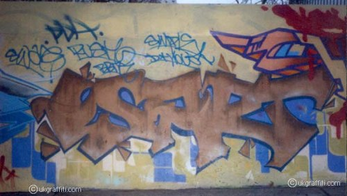
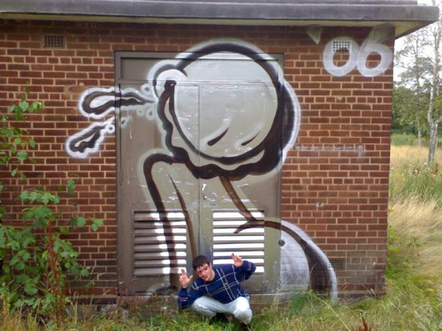

First off, go check out UKGraffiti.com, specifically the Birmingham section. This is a massive archive of photos of graffiti art done in the city over the years organized by artist. It’s not the most advanced site by any stretch but it’s the closest I’ve seen to a documented history of the scene in Birmingham and that makes me very happy indeed. So much so I’d dotted them around this post.
I found out about this site at Martin Mullaney’s Graffiti – Art or Vandalism meeting tonight in Moseley which was very interesting indeed and I’m going to tell you all about it.
Taking place in the not-terribly-hip environs of the Community Development Trust building, graffiti artist Mohammed Ali gave a talk on the history of graffiti and tagging while the guys from In A City Arts talked about the history of graffiti in Birmingham and introduced the new “managed” graffiti zone in Kings Heath which they’re running with support from Mullaney.
Mohammed’s talk started with the New York 70s scene using the seminal book Subway Art, explaining how tagging evolved into painting trains that would travel around the city like public art galleries. He also was keen to emphasise the importance of the words, making a personal connection with Islamic script. Another key point was the scale of the commercial graffiti art scene, from graffiti styles being used in design to the sums paid for graffiti canvases on the international market. One particularly enlightening point was that there were people in the room who came up on the streets of Birmingham who were selling their work to movie stars, which in itself isn’t the only marker of “success” but did indicate that there’s more to graffiti than painting walls and teaching kids. This is a global industry.
Jim, aka Mekz, from In A City talked a bit about their shop but his main thrust was how to get kids who are tagging to move on to more constructive things, be it graffiti art, hip hop or anything else, and to do this by teaching them about the history of the art. The park behind Aldi in Selly Oak was discussed – during the 90s it was a managed graffiti zone where the resident youth workers (both graffiti practitioners) laid down rules about tagging and it became internationally renowned attracting artists from around the world to paint there. Developing this sense of community and history meant the place was safe and the surrounding area clean. The workers moved on after allegedly getting no support and falling out with the council to develop their careers and the place is now a mess and overflows in the surrounding areas.

Esart
But rather than inaccurately repeat the entire event (it was videoed so hopefully that will emerge online) here’s some observations I had.
Birmingham’s graffiti scene is a big part of what some call the creative industries, not just artistically but financially. Artists living here sell their work around the world and bring in vast sums of money. I couldn’t get a rough figure but I’d guess it to be in the hundreds of thousands if not millions. They probably get classified under Fine Artists or Designers or something but they come from the graffiti scene. (An example you might know is Temper and, I discovered, he’s not alone.) This tax paying base struck me as an excellent weapon to wield in getting respect from the bean counters for graffiti and hip hop culture. Maybe Punch Records are already on this, I don’t know.
There’s a history of graffiti and hip hop culture in Birmingham that has great artistic and historical significance stretching back 30 years or more. It struck me that there’s an academic imperative to start archiving and understanding this and making it part of the Birmingham story. A project like Connecting Histories would be a good model. However, in order for this to happen work need to start within the scene to show there is material worth studying here, which is why I found UKGraffiti.com so exciting.

Rome
There are roughly three generations of graf artists in the city. The older guys from the 80s who are now trading as Artists, the 20-something guys like those running In A City and the new kids starting out. What amazed me during the event was how even though they knew each other they didn’t seem to be talking to each other about the issues that so obviously concerned them and their art. I’d assumed the event would be Them explaining what they did to Us but it really felt like this was the first time they’d come together in a vaguely formal way. Obviously I’m in no place to make specific recommendations but some kind of regular meeting – say once a month in a cafe – with no agenda other than to talk and share ideas would do wonders. I also, obviously, think some kind of Created in Birmingham-style blog that simply says what’s happening in the city would be invaluable. Henry Chalfant, the author of the Subway Art book, was in Birmingham last year and some in the audience were horrified they’d not heard about it. On a more local level, two guys who were working with kids in Small Heath realised they were doing so five minutes away from each other in total ignorance. There’s a problem here. (Yes, I’ve offered my services (pro-bono, natch) to help In A City set up a blog and see how it goes.)
Martin Mullaney has a fight on his hands. There are councilors who want him to fail. He admitted a couple of years ago he would have wanted him to fail too and that he’s had a Road To Damascus experience but the fact remains a lot is riding on this managed graffiti zone in Kings Heath. If it goes wrong then it’s probably the end of such experiments, at least for now. That said, Jim talked about a discussion he’d had with Chris Dyer (the Community Safety Lead Officer who liaises between the council and the police) who is looking at establishing a larger graffiti zone in the city centre under Lancaster Circus, so it’s probably fair to say that at a civil servant level there are people who get it but that our elected councillors are, with few exceptions, hopelessly out of touch here. This is why I think they need to be talked to in their own language – financial benefit to the city, the fact that many graffiti artists are voters and, more prosaically, the artistic and cultural value this brings to the city. These might not be things that concern the graffiti / hip hop community but the knock-on effect of making them clear should benefit them.
At the end of the day I’m just an impartial observer looking at this from the outside so it’s up to the people who have an interest in this from all areas to work out how they’re going to take this forward, if at all. The general point – that by recognising Birmingham’s graffiti heritage you can make inroads into stopping kids tagging indiscriminately – is a tough one to buy but having listened to the arguments I think there’s something in it. Get to it, people.
Hi Pete,
this is articulauted well. I was there, at the meeting and was disapointed that Martin Mullaney did not take down any numbers at the end. There was some up standing members of the community at the meeting who could all advocate for a legal spot, in their day to day lives, meetings and on their websites, but this was not followed up.
I agree with your point re. artists communicating. But in my experience everyone has their own agenda so it is hard.
Thank you for documenting this though.
Sister 45 (funk DJ, stencilist and graffiti enthusiast)
Don’t take this as blind evangelising of Utopian nonsense, but I think this is where the internet and blogging comes into its own. I don’t think one overarching website that tries to unite everyone is going to work at all. But if people start telling their own stories (as it were) on their blogs, explaining what they’re up to and documenting the history of the artform in Birmingham, and if these start overlapping and forming informal communities naturally and organically, and if they do so in public, then you can start to get some real communication, understanding and sharing of ideas and strategies going on.
Hmmm I don’t know any writers that have got blogs.
Sounds pretty utopian to me.
Hmmm I don’t know any writers that have got blogs.
Hello,
I am a keen graffiti artist and would love the chance to spray my work on a public wall so everyone can see any ideas of how this can be done legally so that i can share my passion of art with everyone else please?
Chris
Chris,
If you’re in Birmingham get in touch with the In A City Arts people on York Road in Kings Heath. That seems to be a good place to start.
http://www.myspace.com/inacityarts
tight art
Pete, have you watched 80s Channel 4 documentary ‘Bombing’? If not I strongly recommend you get hold of a copy as part of it is filmed in the West Midlands.
Birmingham council in the mid 80s set up an ambitious graffiti art battle in the old Bull Ring with artists from all over the world. It was legal and by all accounts, a feather in the city’s cap for modern culture. Martin Jones also brought the youth of the West Midlands together in various pioneering events from breaking to graffiti (see zulu dawn).
I think that, by the very nature of hip hop culture, it has been commercialised so much that graffiti art is maybe the one area that remains underground… secretive and untrusting. I think Selly Oak area used to have some amazing art but as time has gone by, it is often now just a complete jumble and mainly messy tags.
To my mind, Digbeth could be a very good ‘graffiti zone’ to coincide with the regeneration of the area, make shift events could take place. I hope that one day the whole of the area around Digbeth could be designated as a Bohemian quarter which would cater for all this kind of stuff. Just my musings.
I wish they would stop tagging Chilterns trains at Moor St. It’s not a traveling art gallery because we have to spend extra time and effort cleaning the graffiti off before the train goes anywhere. It is vandalism, and artist or not, OBEY THE LAW like the rest of us.